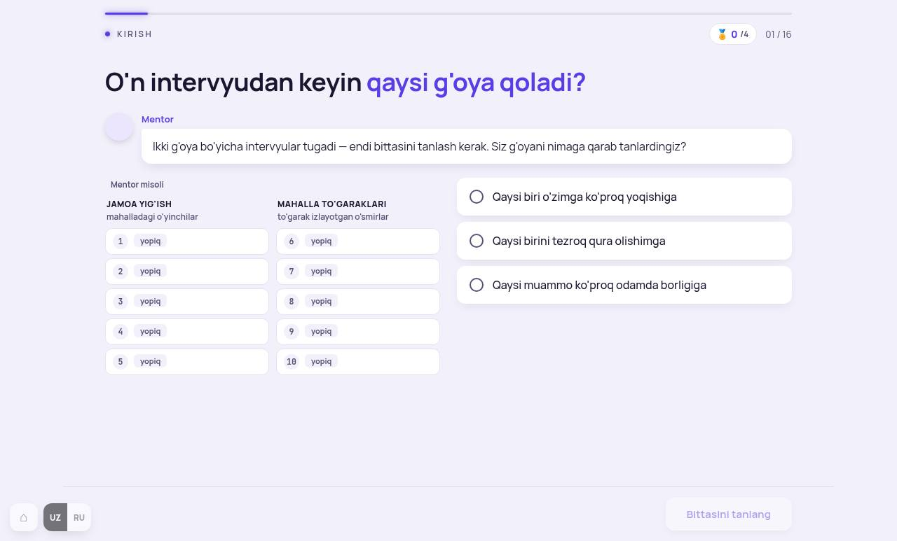
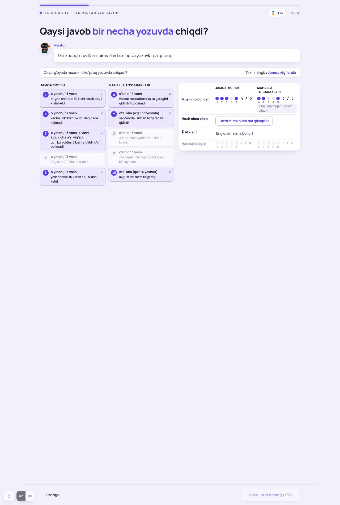
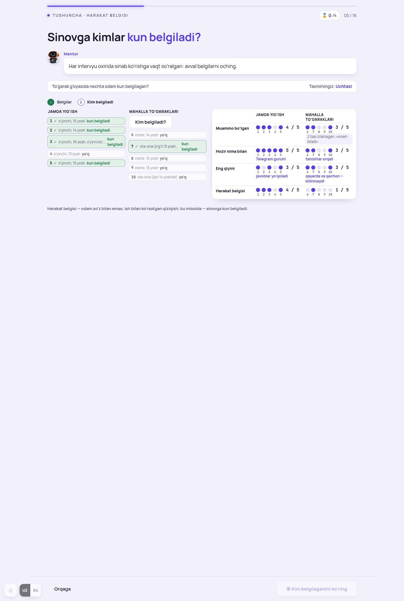
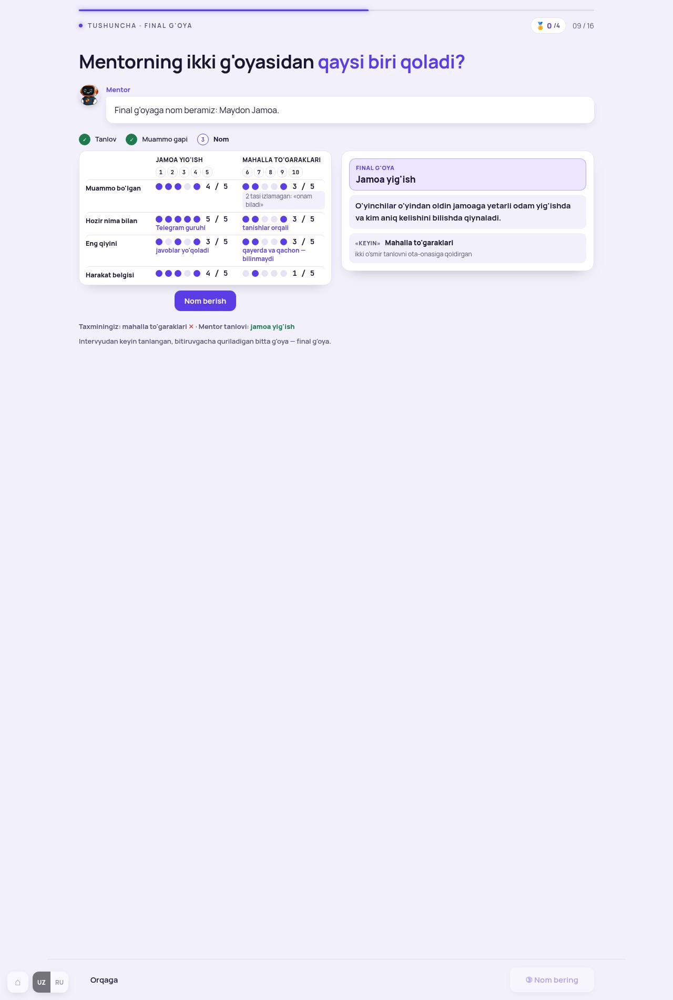
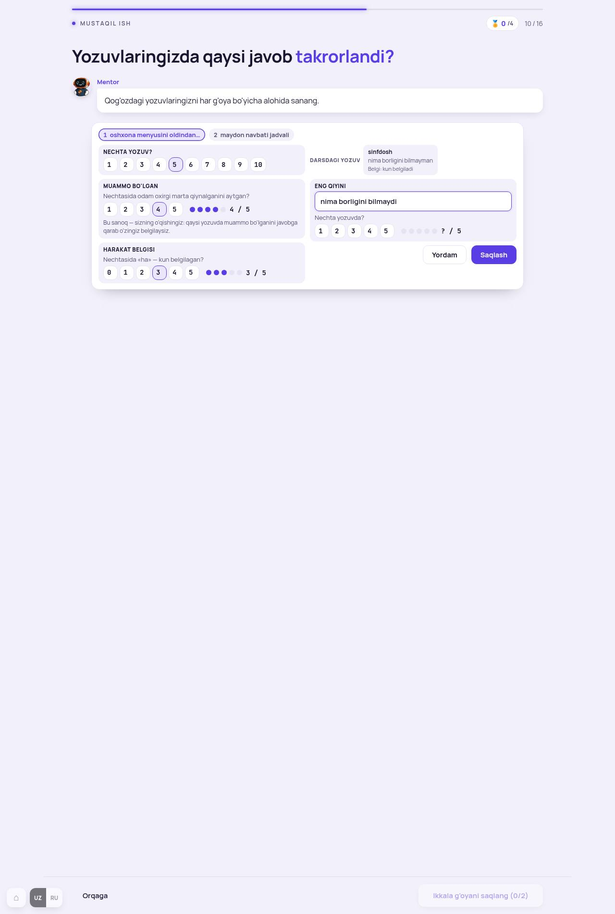
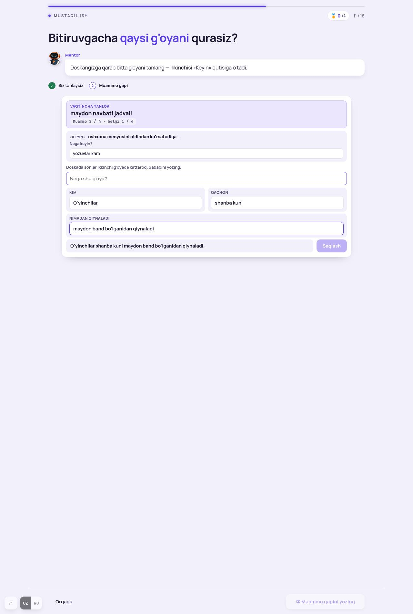
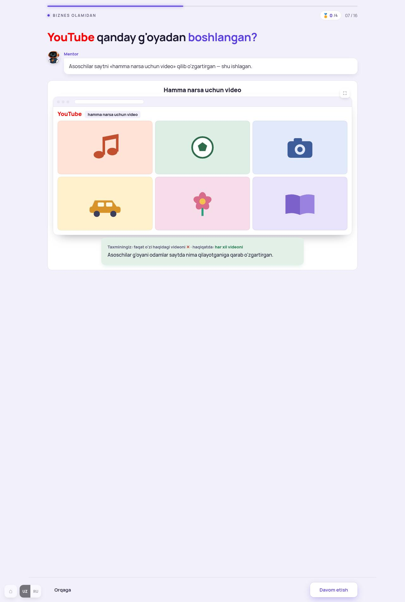

Dars oxirida o'quvchi: o'z ikki g'oyasi bo'yicha yozuvlarni sanab, bittasini tanlaydi va unga muammo gapini yozadi. Mentor misolida buni oldin ko'radi: o'nta yozuv → doska → «Maydon Jamoa».
Har bandda hozirgi surat, tashxis, taklif-namuna. «Hammasi A» yoki band raqami bilan javob bering. Test, YouTube, kod va yakun ekranlari tegilmaydi (oxirgi band).

Tashxis. 2-darsdagi 0-ekran bilan bir xil muammo («his qilolmadim»): maket ma'no bermaydi. O'quvchiga kerak bo'lgan bitta fakt — ikki g'oya bor, har biriga beshta intervyu qilingan, bugun bittasi qoladi. Reja doskasida «Muammo bo'lgan · Hozir nima bilan · Eng qiyini · Harakat belgisi» yozilgan — bu atamalar 2 va 4-ekranda ochiladi, rejada ular shunchaki tushunarsiz so'zlar. Reja 4 band — 2-darsdagidek 3 tasi yetadi.

Tashxis. Bitta bosishdan keyin uch joy birdan o'zgaradi: kartalar, nuqtalar, sonlar. Keyingi savol doskaning ichida kichik tugma — o'quvchi «qayerni bosaman» deb qidiradi (Mentor gapi ham «doskadagi savollarni bosing» — doska qaysi?). Nuqtalar ostidagi raqamlar va «2 tasi izlamagan» izohi bu ekranda ortiqcha (izoh 4-ekranda kerak). Bu «Bittadan» qonuni (DE 213: bir vaqtda bitta ish, javob berilgani yig'iladi) buzilgan ekran.

Tashxis. Ekranning mazmuni to'g'ri (to'garakda kunni ota-ona belgilagan — bu darsning kashfiyoti). Muammo — chiqish yo'li: pastki tugma «② Kim belgilaganini ko'ring» deb turadi, lekin o'chiq; haqiqiy tugma chipning tepasida kichik. Bu tugma-qonuniga zid (DE 219.8: chiqish yo'li ko'rinadigan joyda, to'siq minimal). Doskadagi «2 tasi izlamagan» izohining binafsha ramkada ajralishi ham tushunarsiz — gap 8 va 9-chipda «onam biladi» bilan allaqachon ko'rinadi.

Tashxis. 1 va 2-qadam yaxshi: tanlov, keyin muammo gapi bo'laklari karta ichida. 3-qadam — Mentor «nom beramiz: Maydon Jamoa» deydi, o'quvchi tugmani bosadi, telefon chiqadi. Bu yerda o'quvchi hech narsa hal qilmaydi — tugma faqat animatsiya uchun. Yana: taxmin qatori, «final g'oya» ta'rifi va nishon eslatmasi kartasiz osilgan (dizayn-qoida: kartasiz osilgan narsa bo'lmasin).

Tashxis. Savollar to'g'ri va kerakli (sanoq qog'ozdan), lekin forma shaklida. 13 yoshli o'quvchi to'rtta son-qator va bitta matnni bir vaqtda ko'radi; «Bu sanoq — sizning o'qishingiz…» izohi ortiqcha. 3-darsda «Bittadan» bilan hal qilganmiz: savollar ketma-ket, javob berilgani bitta qatorga yig'iladi. Yakuniy doska (saqlangandan keyin) yaxshi — qoladi.

Tashxis. 1-qadam (doska + ikki g'oya kartasi) toza. 2-qadamda ikkita «nega» qatori bor: «Nega keyin?» (ikkinchi g'oya uchun) va «Nega shu g'oya?» (sonlar kichik bo'lsa) — o'quvchi bir xil sababni ikki marta yozadi. Muammo gapi uchun 8-ekrandagi Mentor namunasi ko'rinmaydi. Saqlash tugmasi o'chiq turadi va nima yetishmayotganini aytmaydi (DE 219.8). Keyingi darslar bu yozuvdan faqat g'oya nomi va muammo gapini o'qiydi — «Nega keyin?» hech qayerda ishlatilmaydi.

Ma'lumot zanjiri tekshirildi: 3-dars yozgan g'oya nomlari va yozuvlar 9-ekranda to'g'ri o'qiladi; 10-ekran yozuvi 5, 7, 13, 14-darslarga ketadi (g'oya nomi, muammo gapi) — taklif A ularni buzmaydi.